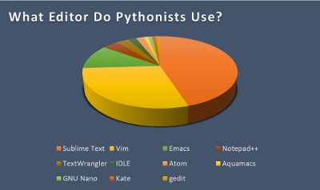

One of the most important things that goes with coding, is setting up your enviroment. Depending on what you are planning on doing, different text editors might do a better job. But to get started everyone should have a text editor to help them code. There are an insane amount of text editors out there available to use, I am currently using Sublime, but another one worthy of noting is Atom. These are two big dogs that most people utilise. You can decide on your own which one you want to use, here are two links to pick, if you don't understand the lingo, just pick one, it isn't going to kill you. It is also completely fine to use Notepad or Notepad++ as texteditor. Notepad++ is a little more fancier though. Make sure when downloading any files, check to see what operating system (OS) it is for, and fow what version of that OS. A few other text editors worthy of noting are Emacs and Vim, Vim being the more popular one.
Another important part we should talk about is an integrated development enviroment(IDE) because it is an application program that normaly is a text editor, compiler, debugger, and a graphical user interface(GUI) builder. They are popular among programmers due to having those attributes all in one space. When picking an IDE make sure it is used for the language you plan to code in.
Third Party Software
Third party software is a way to obtain code that already achieves a goal your are interested in, sometimes you do have to buy it thpugh. But when you do obtain it, it improves the efficiency and quality of developping custom applications. There are a wide variety of uses including using the code for websites, social engineering, penetration testing, or creating games.